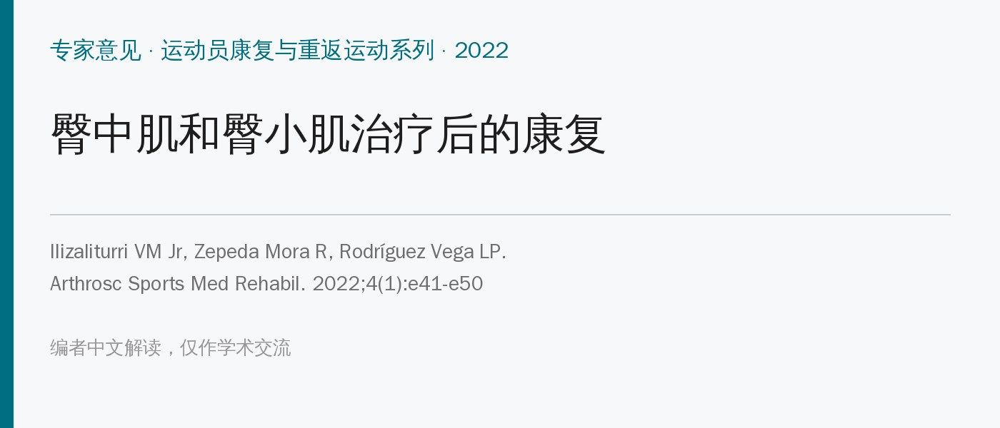
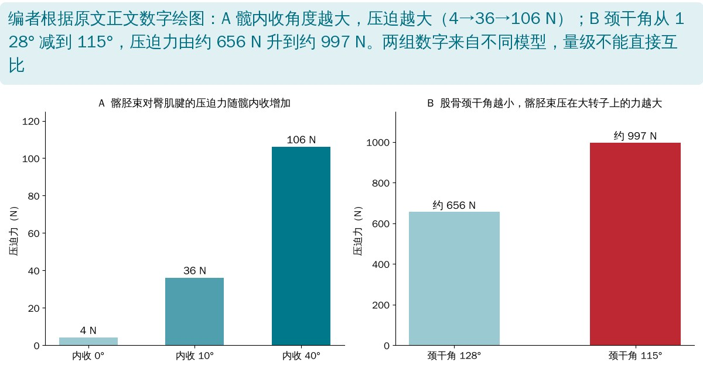
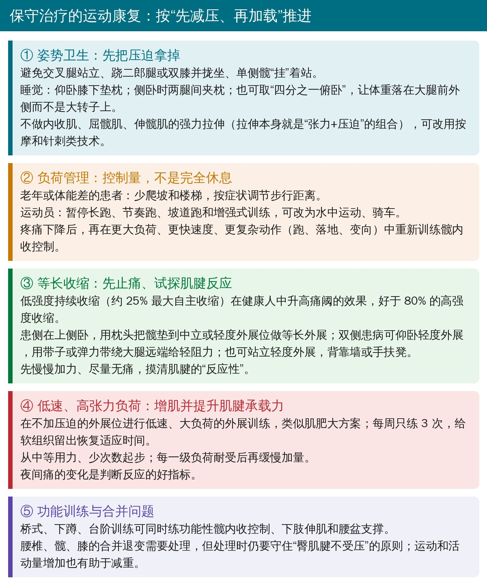
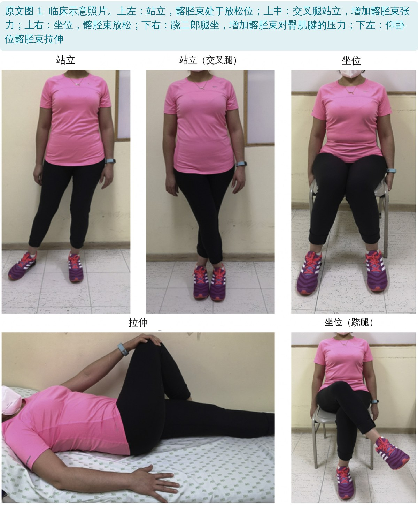
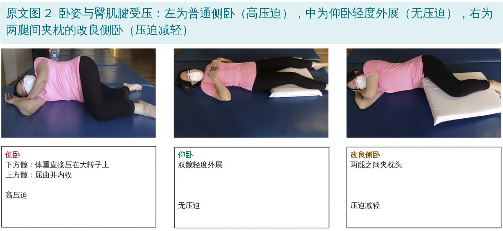
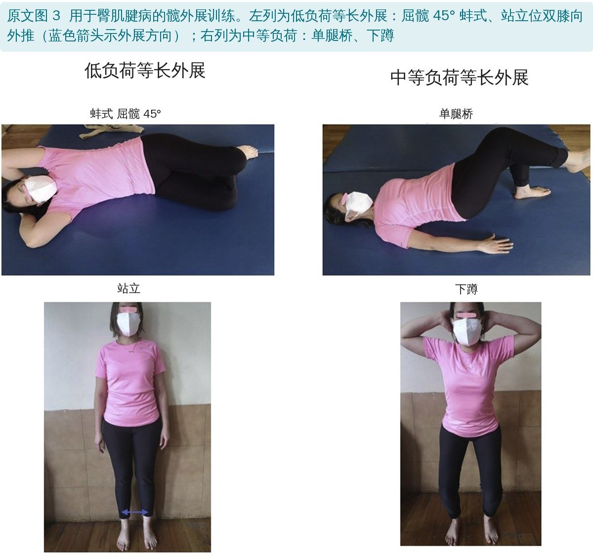
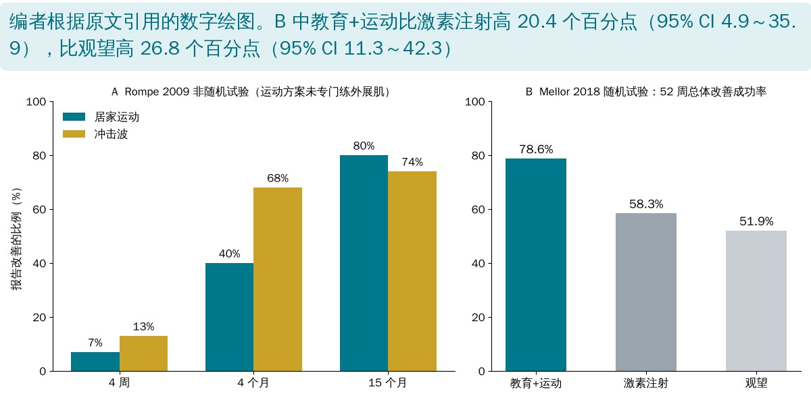
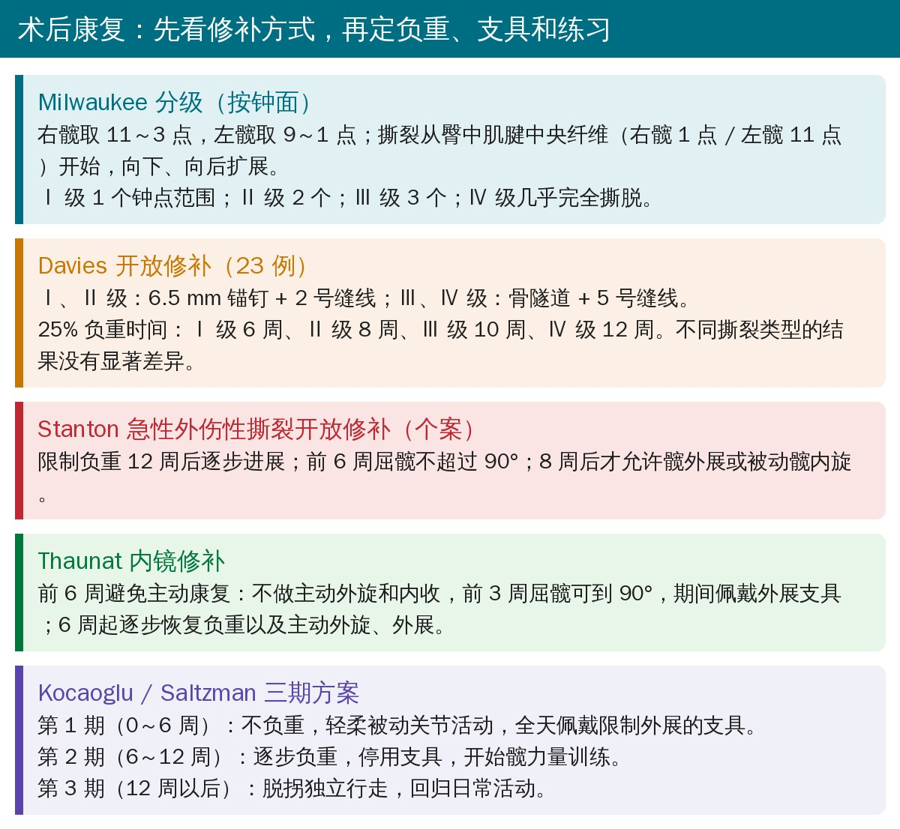
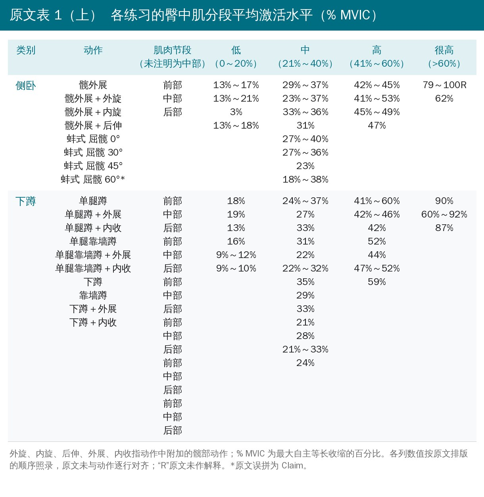
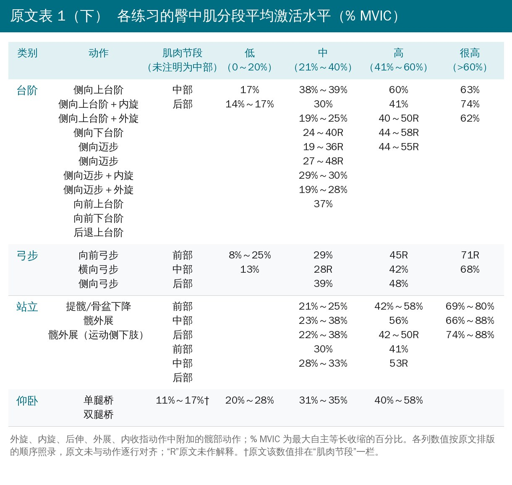

🔖原文信息（编者中文重排）
📚 文献信息
▪ Ilizaliturri VM Jr, Zepeda Mora R, Rodríguez Vega LP. Rehabilitation After Gluteus Medius and Minimus Treatment. Arthrosc Sports Med Rehabil. 2022;4(1):e41-e50. doi:10.1016/j.asmr.2021.10.024
▪ 作者单位：墨西哥国家康复研究所（墨西哥城）
▪ 文章类型：专家意见 / 叙述性综述（Level V 证据），“运动员康复与重返运动”专题
大转子疼痛综合征（GTPS）是一组以髋外侧疼痛为主的问题，从大转子滑囊炎、髂胫束紧张、臀肌腱病，一直到臀中肌、臀小肌腱的真正撕裂。它影响 10%～25% 的普通人群，40～60 岁高发；Segal 等的多中心研究中，女性单侧 15%、双侧 8.5%，男性单侧 6.6%、双侧 1.9%，女性明显更多。
现在认为臀中肌和（或）臀小肌腱病是大转子压痛最常见的来源。手术指征最明确的是外展肌力低于 MRC 4 级 + Trendelenburg 步态，但不论保守还是手术，康复都绕不开。这篇综述把病理力学、保守康复和几种术后方案放在一起讲。
• 肌腱怕的不是单纯受力，而是受力方式不对：张力负荷逐步增加 → 合成代谢、承载力提高；负荷骤增或长期“不负荷”→ 分解代谢；“牵拉 + 压迫”的组合最伤
• 臀中肌、臀小肌腱在大转子止点处会被髂胫束压住，髋越内收压得越狠；屈髋角度大时，髂胫束经筋膜与臀筋膜、胸腰筋膜相连，张力也会增加——屈髋 + 内收是最典型的高压迫姿势
• 日常里的高压迫：单侧髋“挂”着站、双膝并拢或跷二郎腿坐、单腿负重时骨盆过度侧倾或侧移、跑步落地时髋过度内收
• 外展机制分两组：臀中肌 + 臀小肌（大转子外展肌）提供单腿站立骨盆控制约 70% 的外展力，阔筋膜张肌 + 臀大肌 + 股外侧肌通过绷紧髂胫束提供约 30%；臀肌腱病患者常见阔筋膜张肌肥大、臀中小肌萎缩
• 女性臀中肌止点更小、力臂更短，颈干角小的人更吃亏；她们更常用“多一点内收”来借力，结果是深层肌腱张力降低、压迫增加

🔖根据原文数字绘图：髋内收角度、股骨颈干角与髂胫束压迫力
这是一篇专家意见，没有检索策略和纳入标准，作者回顾了保守治疗和术后康复的相关文献并结合本单位做法给出建议；表 1 的肌电数据来自另一篇系统综述（原文参考文献 38）。下面按原文顺序整理成可操作的流程。
保守治疗通常包括短期非甾体抗炎药、调整活动、物理治疗、局部注射（激素或富血小板血浆 PRP）和冲击波。作者把运动康复的核心概括为一句话：先把压迫拿掉，再逐步加张力负荷。

🔖保守治疗运动康复的五个环节（编者根据原文整理）

🔖原文图 1：日常姿势与髂胫束张力、压迫
• 避免髋内收位：交叉腿站立、跷二郎腿或双膝并拢坐
• 卧姿：普通侧卧时两侧都受压——下方髋被床顶住大转子，上方髋屈曲内收；改为仰卧（必要时膝下垫枕），或侧卧时两腿间夹枕，或取“四分之一俯卧”让体重落在大腿前外侧
• 不做内收肌、屈髋肌、伸髋肌的强力拉伸：拉伸同时带来很大的被动张力和压迫；可用按摩、针刺替代，但髂胫束常很敏感，强力“松解”要小心

🔖原文图 2：卧姿与臀肌腱受压
• 关键是控制快速增加的张力负荷，尤其是带“牵张—缩短”或压迫循环的动作；患者教育 + 细调运动量
• 大多数娱乐或运动可以保留，只去掉最刺激的部分：老年或体能差者少爬坡、少爬楼，按症状调节步行距离
• 运动员可能需要暂停长跑、节奏跑、坡道跑和增强式训练，用水中运动、骑车替代
• 疼痛下降后，再在更大负荷、更快速度、更复杂的动作（跑、落地、变向）中重新训练髋内收控制
• 低强度、持续的等长收缩有止痛作用：在健康人中，约 25% 最大自主收缩升高痛阈的效果好于 80%；用于肌腱痛的最佳剂量尚未确定
• 侧卧等长外展：患侧在上，用枕头把髋垫到中立或轻度外展，避免肌腱受压；低负荷、低速度
• 双侧患病：仰卧轻度外展，用带子或弹力带绕在大腿远端给轻阻力
• 站立等长外展：轻度外展站立；放松不下髂胫束张肌的人，可背靠墙或双手扶面前的凳子
• 要点：让患者慢慢加力、早期尽量无痛，直到治疗师和患者摸清肌腱有多“敏感”；确认反应后，可在至少轻度外展位逐步加大等长负荷

🔖原文图 3：臀肌腱病的髋外展训练
• 要让臀中肌、臀小肌肥大并提高肌腱承载力，需要更高水平的张力负荷；低速、大负荷（类似增肌方案）对肌腱结构的益处是单纯离心训练给不了的
• 选择低速、高张力、尽量不压迫的外展训练
• 每周只练 3 次，给软组织留出恢复和适应时间
• 负荷起点过高或加得太快，可能诱发疼痛加重，甚至让已退变的肌腱断裂：从中等用力、少次数开始，每一级耐受后再缓慢加量
• 夜间痛的变化是判断运动反应的好指标
• 桥式、下蹲、台阶一举多得：练功能性髋内收控制、下肢伸肌，以及腰盆、髋、膝的肌肉支撑
• 腰椎、髋、膝合并退变常伴髋膝伸肌无力，需要手法或专项训练处理，但始终要守住臀肌腱的负荷原则（尤其是控制压迫）
• 增加运动和日常活动量也有助于减重
• 选动作强度可参考表 1：各练习臀中肌激活的 % MVIC 分为低（0～20%）、中（21%～40%）、高（41%～60%）、很高（>60%）四档（见文末附录）
• 激素注射：4 周时 72%～75% 中度缓解，3～4 个月降到 41%～55%，12 个月与常规处理没有差别；可能主要是局部镇痛作用，复发说明没有解决根本问题
• PRP：小样本研究提示有效；70 例部分撕裂的随机试验中 12 周时优于激素（改良 Harris 髋评分）
• 径向冲击波：4 周仅 13% 改善，4 个月 68%，15 个月 74%
• 作者结论：注射和冲击波可以补充物理治疗，但不应作为单独的治疗方式

🔖根据原文引用的两项研究数字绘图
• Rompe 2009（非随机）：居家运动 4 周只有 7% 改善，4 个月 40%，15 个月 80%；但其方案包括梨状肌和髂胫束拉伸（可能压迫臀肌腱）、直腿抬高、靠墙蹲、俯卧伸髋，没有专门练外展肌，监督也有限
• Mellor 2018（随机、单盲、三组）：52 周总体改善成功率 教育 + 运动 78.6%，激素注射 58.3%，观望 51.9%；在 8 周时的主要结局上，教育 + 运动也都优于激素注射
• 差别在于 Mellor 的方案围绕肌腱负荷管理、专门针对臀中肌和臀小肌——这正是前面保守康复原则的来源
术后康复首先要知道入路（开放还是内镜）、术中所见和修补方式，再决定活动和负重限制、要不要用支具限制外展、何时开始行走和力量训练。

🔖原文几种术后方案（编者整理为中文卡片）
| Davies 开放修补 按 Milwaukee 分级定负重时间 | |
| 分级 | 按钟面：右髋 11～3 点、左髋 9～1 点；Ⅰ 级 1 个钟点、Ⅱ 级 2 个、Ⅲ 级 3 个、Ⅳ 级几乎完全撕脱 |
| 固定 | Ⅰ、Ⅱ 级：6.5 mm 锚钉 + 2 号线；Ⅲ、Ⅳ 级：骨隧道 + 5 号线 |
| 25% 负重 | Ⅰ 级 6 周；Ⅱ 级 8 周；Ⅲ 级 10 周；Ⅳ 级 12 周 |
| Stanton 急性外伤性撕裂开放修补 个案 | |
| 负重 | 限制 12 周，之后逐步进展 |
| 活动度 | 前 6 周屈髋 ≤90°；8 周后才允许髋外展或被动髋内旋 |
| Thaunat 内镜修补 | |
| 0～6 周 | 避免主动康复：不做主动外旋和内收；前 3 周屈髋可到 90°；佩戴外展支具 |
| 6 周起 | 逐步恢复负重以及主动外旋、外展 |
| Kocaoglu / Saltzman 三期方案 | |
| 第 1 期 0～6 周 | 不负重；轻柔被动关节活动；全天佩戴限制外展的支具 |
| 第 2 期 6～12 周 | 逐步负重；停用支具；开始髋力量训练 |
| 第 3 期 >12 周 | 脱拐独立行走，回归一般活动 |
作者的总结：撕裂程度似乎与临床结果无关，但决定了需要多牢固的固定；撕裂越大越复杂，固定要求越高，保护期也越长。保护期过后，术后物理治疗与保守治疗的原则相似：控制压迫、逐步加张力负荷，并需要密切监督。
• Level V 专家意见：不是系统综述，没有检索策略、纳入标准或质量评价，作者自己也承认相关文献很少、多为 Ⅲ、Ⅳ 级病例系列
• 保守康复部分主要沿用 Grimaldi 等的臀肌腱病负荷管理框架（原文参考文献 15），直接的临床试验证据基本只有 Mellor 2018 一项随机试验
• 术后部分只是罗列：几种方案的负重时间、支具使用差别很大，没有比较哪种更好，也没给出保护期之后具体怎么加负荷
• 表 1 的肌电数据来自健康人的表面肌电，% MVIC 不等于肌腱实际承受的张力或压迫，也不能直接对应患者的耐受程度
• 优点：把“压迫”这条主线讲得很清楚，姿势卫生和等长、增肌的进阶给得比较具体，图示直观
• “运动 4～12 个月才见效”的依据站不住：讨论说髋外展训练“早期可能不改善，但 4～12 个月后改善疼痛和力量”，引用的是 Rompe 2009——可作者自己在前文指出 Rompe 的方案没有外展肌力量训练，且该研究随访到 15 个月、没测肌力；而方法更好的 Mellor 2018 在 8 周时运动组就已优于激素注射。摘要里的“Exorcise intervention…4 months to a year”（Exercise 拼错）同样来源于此
• 引用了不存在的文献：Thaunat 内镜术后方案那段末尾标注参考文献 49，但全文参考文献只有 47 条
• 结论多出一条正文没有的内容：结论称“开放与内镜处理外展肌腱撕裂的结果似乎没有差异”，正文没有给出任何开放与内镜的比较数据
• 图 3 与表 1 不一致：图 3 把屈髋 45° 蚌式标为“低负荷”，表 1 中它的臀中肌激活是 23%，落在“中等”（21%～40%）一档；图 3 把单腿桥、下蹲也称为“等长外展”，但它们并不是外展动作
• 表 1 排版错位：各列数值与动作没有逐行对齐（例如下蹲类 10 个动作、18 行节段，各档数值行数都对不上），仰卧桥式的“11%～17%”排进了“肌肉节段”一栏，“Clam”误拼为“Claim”，多处数值带“R”却未解释
• 激素注射的描述前后不一：先说中长期“不到一半患者有效”，随后又给出 3～4 个月 41%～55% 有效
• 压迫力数值量级相差很大：内收 0°→40° 时为 4→106 N，颈干角 128°/115° 时却是 656/997 N，两组都标注引自同一参考文献 14，原文未说明来自不同模型或条件
• 小错：正文“preserved. compression control.”句子残缺；“less than 44”应为 MRC 肌力低于 4 级（上标 4 为参考文献号）
• 第一步永远是减压：教患者别交叉腿站、别跷二郎腿、睡觉两腿间夹枕或仰卧，停掉“拉伸髂胫束”这类动作
• 先用低强度等长外展止痛：侧卧（患侧在上、枕头垫成轻度外展）或站立轻度外展，慢慢加力、尽量无痛
• 再进入低速、大负荷外展训练：每周 3 次，从中等用力、少次数起步；以夜间痛判断是否加量过快
• 功能训练选桥式、下蹲、台阶，重点盯住髋内收控制；可参照表 1 的 % MVIC 由低到高排序动作
• 运动起效偏慢，需要规律随访和监督；注射或冲击波可作短期辅助，不要单独使用
• 术后：先问清修补方式和撕裂分级——前 6～12 周以保护为主（限制负重、屈髋 ≤90°、必要时外展支具），之后按保守康复的原则逐步加载

🔖原文表 1（上）：侧卧、下蹲类练习的臀中肌激活

🔖原文表 1（下）：台阶、弓步、站立、仰卧类练习的臀中肌激活
欢迎关注骨科康复小黄公众号，获取更多物理治疗的专业知识！
📄参考文献：
Ilizaliturri VM Jr, Zepeda Mora R, Rodríguez Vega LP. Rehabilitation After Gluteus Medius and Minimus Treatment. Arthrosc Sports Med Rehabil. 2022;4(1):e41-e50. doi:10.1016/j.asmr.2021.10.024
原文以 CC BY-NC-ND 4.0 协议开放获取（署名—非商业性使用—禁止演绎），版权归原作者及北美关节镜协会所有。本文为非商业的学术交流中文解读：图 1～3 引自原文，图中英文标签改为中文；其余示意图、卡片为编者根据原文内容整理绘制，表格为中文翻译。如有侵权请联系删除。